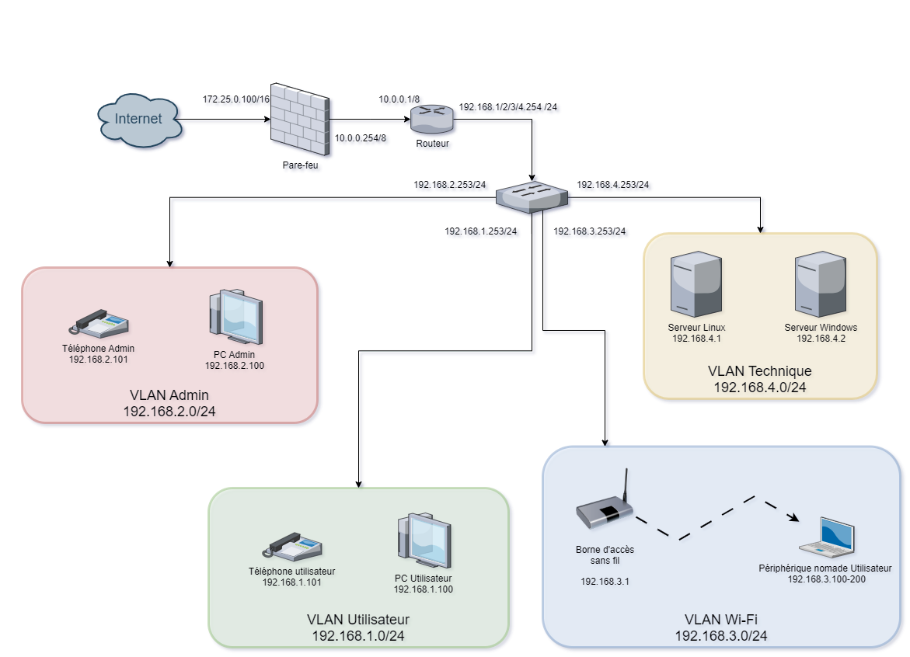
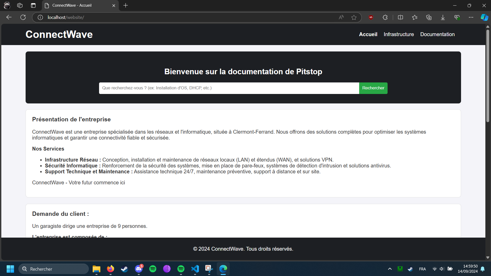

// sae_24
PROJET INTÉGRATIF
Conception, déploiement et sécurisation de l'infrastructure réseau complète d'une PME. Intégration de services Windows/Linux, gestion des VLANs, et développement d'un portail web d'administration avec démonstration d'attaques réseau.
Contexte & Objectifs
Dans le cadre du projet universitaire SAÉ 24, l'objectif était de concevoir et de mettre en place l'infrastructure réseau complète d'une petite entreprise composée de plusieurs services distincts (Finance, RH, Technique).
Cette infrastructure devait permettre une communication sécurisée entre les differents services via des VLANs, tout en assurant la connectivité Internet pour les postes clients et la haute disponibilité des services internes.
Architecture & Déploiement
- Réseau : Configuration d'un switch, d'un routeur et d'un réseau Wi-Fi. Mise en place de VLANs pour segmenter le trafic métier.
- Systèmes : Déploiement d'un serveur Windows avec Active Directory pour la gestion centralisée des utilisateurs, d'un serveur Linux, et d'un serveur de téléphonie (VoIP).
- Services : Mise en place de services critiques fonctionnels : DHCP, FTP, et serveur Web (Apache/PHP).

Sécurité & Interface d'Administration
Un aspect majeur du projet était la sécurisation de l'infrastructure contre les menaces internes, avec un focus sur les attaques de couche 2. Un serveur web a été mis en place, hébergeant une interface dynamique en PHP permettant l'authentification des utilisateurs et l'exécution de scripts d'automatisation.
- Démonstration d'attaques réseau réelles, notamment le DHCP Starvation et le DHCP Spoofing (Rogue DHCP).
- Mise en place de contre-mesures actives sur les équipements réseaux (Switches) pour s'en prémunir.
- Documentation et présentation des protocoles de sécurité via le portail web.

Bilan & Compétences
Ce projet intégratif a été une excellente opportunité de lier de multiples domaines de l'informatique pour obtenir une vision globale d'un SI d'entreprise :
- Configuration réseau : Routage, commutation, gestion du matériel (switch, firewall).
- Administration système : Déploiement AD, Linux, services réseaux (DHCP, FTP).
- Sécurité réseau : Identification des attaques L2/L3 et remédiations matérielles.
- Développement & Gestion : Scripts PHP, travail en équipe, planification des tâches de déploiement.